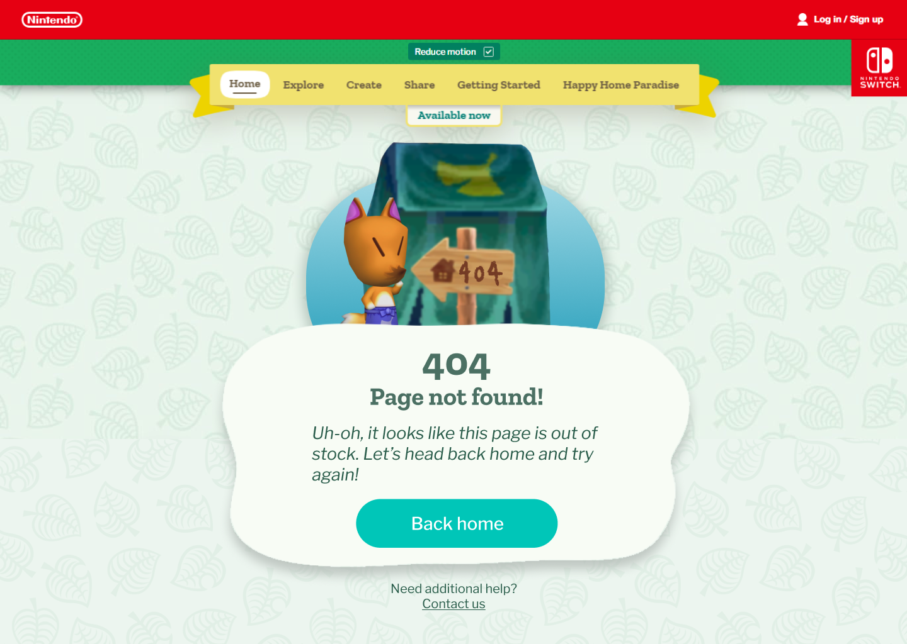
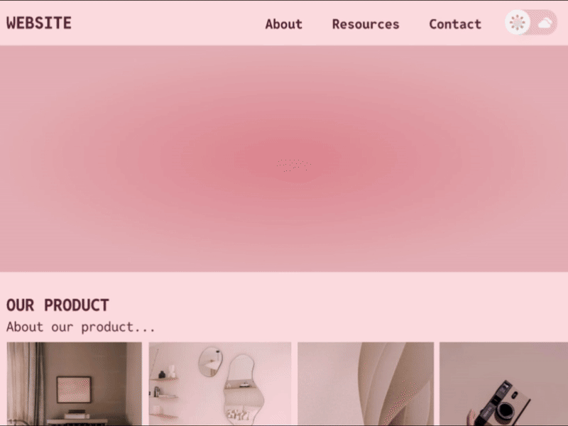

Shorter projects and design challenges that I've been working on and thought I'd share outside of the featured projects area!
Cyberpunk Bartending Point of Sale (POS) System
April 2025
For this project, I created a POS interface for the fictional bar VA-11 Hall-A from the video game of the same name. The game takes place in a futuristic, cyberpunk world and you play as Jill, a bartender at the titular bar. You serve drinks to various quirky customers and the drinks that you make influence the storyline's progression.
I thought that this project was interesting not only due to the stylish cyberpunk look, but it also takes a deeper look into a current gap in the market: POS systems made specifically for bars. When I looked on the internet for current real examples, I could only find a few very outdated looking systems, and the rest of the examples of POS that I could find were for restaurants with all sorts of features that were not relevant to bars.
One thing I learned a lot about was just how different the needs of different establishments can be with their POS systems. For example, bars have a heavy emphasis on tabs and being able to open and close them, as well as keep customer information for tab security. On the other hand, restaurants have table management and waiter/waitress assignments.
In terms of prototyping, I learned a lot about variables and dynamic prototyping in Figma with this project, and I'm proud of how it turned out! If I had more time, I would love to make it fully functional.
View Interactive Prototype
Screenshot from VA11-Hall-A game that I took inspiration from

Screenshot from VA11-Hall-A game that I took inspiration from 2


LOCKED IN ORBIT: Accessible Text-Based Adventure Game for Blind and Low-Vision Students
April 2025
This is a project that is different from what I normally do!
I was given the opportunity to create a project for the Governor Morehead School for the Blind's STEM Expo, and my team and I decided to make a text-based choose your own adventure game. The game is titled Locked in Orbit, and it is designed to be accessible for blind and low-vision users. Set aboard a stranded spaceship, the player explores eerie corridors, evades danger, and makes critical decisions through nothing but narration and sound. The story features branching paths, moral dilemmas, and multiple endings, some chilling, others redemptive.
The interface is fully audio-navigable: players use the arrow keys to cycle through choices, Enter to select, and Spacebar to repeat narration. Everything is read aloud using the browser's built-in speech synthesis, with customizable voice speed and simple keyboard controls. Visually, the game uses large, high-contrast text with no mouse or hover requirements. We wanted to make a game that could be played entirely by ear, with no need for sighted assistance.
Check out the game for yourself! It's hosted live on github pages:
Site Design for Purrfect Brew Cat Cafe
March 2025
In this short UI Sprint, I was challenged with creating a website for a fake business that was randomly generated by an online project generating tool. From this tool, I was tasked with the business "Purrfect Brew," a cat cafe that serves drinks and hosts a cozy space where customers can interact with and adopt cats.
I had great fun being able to design everything fron the color palette, to the fonts, to the logo!
Nostalgic Venture into Error 404 Pages
February 2025
In this design challenge, I was tasked with creating an Error 404 page for a brand that did not yet have one. It was interesting to discover just how much thought went into creating what others may see as a more formulaic/template type page. You have to consider precisely how much information would be useful for your target audience. For example, a website about python libraries might have a more detailed error description; however, a website such as Nintendo, who has a large audience base of children may opt to include minimal information and a large "return home" button.
In my design, I opted for the latter. I crafted a playful error message in the character of Redd from the Animal Crossing series, and I styled it to look like a dialogue box from Animal Crossing New Horizons. This way, the error message has an aspect of familiarity and makes the audience understand that they did not do something wrong. I experimented with collaging different models together such as grabbing the tent, Redd, and sign images and creating what you see in my page.

Simple, Stylish Toggle Button
January 2025
For this short and quick design sprint, I was tasked to create a toggle button that turns something on and off. The function that I chose to tie my button to was a dark mode/light mode switch. While the design task is simple overall, it really makes you think about the little details inside universally recognized designs. For example, what side means on, and what side means off in a toggle button? Does it matter? Yes! And to add clarity, I added extra icons to indicate the status of the button, portraying exactly what mode it is on.
